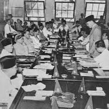
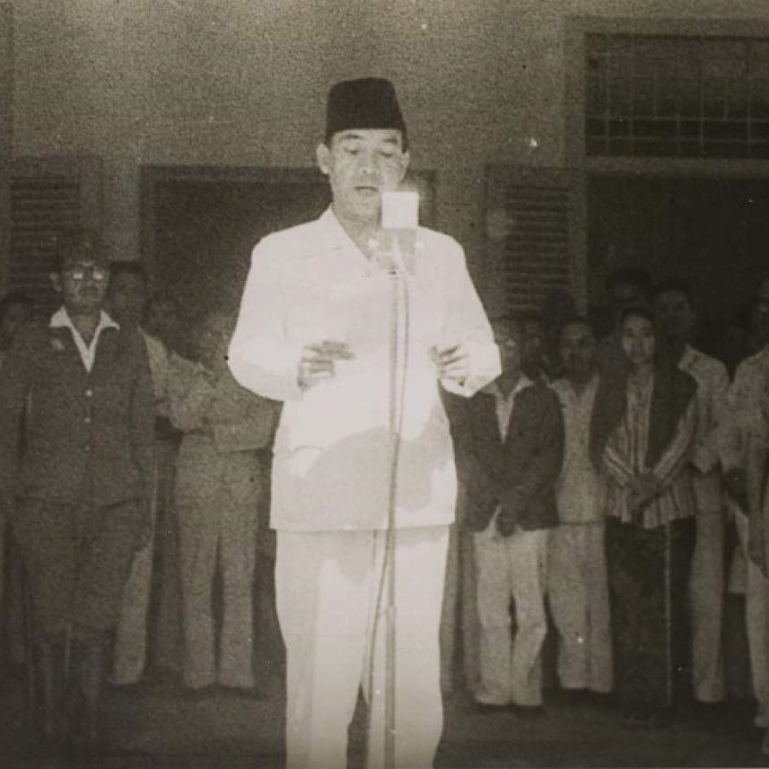

Pembentukan BPUPKI : 1 Maret 1945 Sidang Pertama : 28 Mei - 1 Juni 1945 Sidang Kedua :10 - 16 Juni 1945 Pembubaran : 7 Agustus 1945

1945
PPKI
Pembentukan PPKI : 7 Agustus 1945 Sidang PPKI : 18 - 22 Agustus 1945

1945
Proklamasi
Proklamasi Kemerdekaan Indonesia dibacakan oleh Ir. Soekarno : 17 Agustus 1945
1945
Pancasila
Lahirnya Pancasila : 1 Juni 1945
Be Part
Of Our
Story!
Quiz
Bagian 1
Bagian 2
Bagian 3
Dapatkan Skor terbaik!
Contact Us
Pancasila
Introduction.
Pancasila adalah dasar negara Indonesia. Nama ini terdiri dari dua kata dari bahasa Sanskerta: पञ्च "pañca" berarti lima dan शीला "śīla" berarti prinsip atau asas. Pancasila merupakan rumusan dan pedoman kehidupan berbangsa dan bernegara bagi seluruh rakyat Indonesia.
Lahirnya Pancasila:
1 Juni 1945
Sila - Sila:
Sila 1. Ketuhanan yang Maha Esa
Sila 2. Kemanusiaan yang adil dan beradab
Sila 3. Persatuan Indonesia
Sila 4. Kerakyatan yang dipimpin oleh hikmat kebijaksanaan dalam permusyawaratan/perwakilan
Sila 5. Keadilan sosial bagi seluruh rakyat Indonesia
4 Pilar
Bagian I.
Pancasila, dasar negara Indonesia, tidak muncul tiba-tiba pada tahun 1945. Pembentukannya melalui proses panjang yang dimulai sejak awal 1900-an. Proses ini ditandai oleh munculnya berbagai organisasi kebangkitan nasional, partai politik, dan Sumpah Pemuda. Konseptualisasi Pancasila dimulai secara resmi pada sidang pertama BPUPKI dari 29 Mei hingga 1 Juni 1945.
Pada sidang tersebut, banyak anggota BPUPKI mengusulkan pandangan mengenai dasar negara. Puncaknya adalah pidato Soekarno pada 1 Juni yang menawarkan lima prinsip dasar negara yang disebutnya sebagai Pancasila:
1. Kebangsaan Indonesia
2. Internasionalisme atau perikemanusiaan
3. Mufakat atau demokrasi
4. Kesejahteraan sosial
5. Ketuhanan yang berkebudayaan
Soekarno juga mengemukakan bahwa angka lima memiliki nilai simbolis dalam budaya Indonesia, seperti dalam Rukun Islam dan panca indera manusia. Sebagai alternatif, Soekarno menawarkan Trisila (Socio-nationalisme, Socio-democratie, ke-Tuhanan) dan Ekasila (Gotong royong), menekankan bahwa gotong royong adalah inti dari semua sila.
Setelah sidang, BPUPKI membentuk "Panitia Delapan" dan kemudian "Panitia Sembilan" untuk menyempurnakan rumusan Pancasila. Panitia ini menyusun Piagam Jakarta pada 22 Juni 1945. Tanggal 18 Agustus 1945, PPKI mengubah bagian akhir Piagam Jakarta dari "Ke-Tuhanan, dengan kewajiban menjalankan syariat Islam bagi pemeluk-pemeluknya" menjadi "Ketuhanan Yang Maha Esa" dan menyederhanakan syarat presiden menjadi hanya "orang Indonesia asli."
Ada tiga rumusan historis Pancasila:
1. Pidato Soekarno pada 1 Juni 1945
2. Piagam Jakarta pada 22 Juni 1945
3. Pembukaan UUD 1945 yang disahkan PPKI pada 18 Agustus 1945
4 Pilar
Bagian II.
#2. UUD 1945 adalah konstitusi tertulis yang menjadi landasan hukum tertinggi di Indonesia, disahkan pada 18 Agustus 1945, dan telah mengalami empat kali amandemen (1999-2002). Struktur:
1. Pembukaan: Memuat tujuan negara dan dasar negara (Pancasila).
2. Batang Tubuh: Terdiri dari 21 bab dan 73 pasal setelah amandemen, mengatur berbagai aspek kehidupan bernegara.
3. Penjelasan: (Awalnya ada, tetapi setelah amandemen beberapa dijelaskan langsung dalam pasal-pasal). Fungsi:
1. Landasan hukum tertinggi.
2. Panduan penyelenggaraan negara.
3. Menjamin hak asasi manusia.
4. Menetapkan struktur dan fungsi lembaga negara.
#3.
NKRI adalah bentuk negara Indonesia yang berlandaskan prinsip kesatuan, dengan seluruh wilayah dari Sabang sampai Merauke sebagai satu kesatuan yang tidak terpisahkan. Prinsip:
Kesatuan Wilayah: Seluruh wilayah Indonesia adalah satu kesatuan utuh.
Kesatuan Bangsa: Semua warga negara Indonesia adalah satu bangsa.
Kesatuan Pemerintahan: Pemerintahan bersifat sentralisasi dengan desentralisasi kepada daerah-daerah.
Keunggulan:
1. Kestabilan politik dan keamanan.
2. Pemerataan pembangunan.
3. Kekuatan dalam keberagaman. Tantangan:
1. Disintegrasi.
2. Kesenjangan pembangunan.
3. Tantangan globalisasi.
4 Pilar
Bagian III.
Bhinneka Tunggal Ika adalah semboyan negara Indonesia yang berarti "Berbeda-beda tetapi tetap satu," mencerminkan keberagaman suku, agama, ras, dan budaya di Indonesia yang bersatu dalam satu kesatuan bangsa. Sejarah:
1. Berasal dari kitab Sutasoma karya Mpu Tantular pada masa Kerajaan Majapahit.
2. Diadopsi sebagai semboyan negara dan tercantum pada lambang negara, Garuda Pancasila.
Makna: 1. Keragaman: Menghargai keberagaman sebagai kekayaan bangsa. 2. Persatuan: Persatuan: Menjaga persatuan di tengah perbedaan. 3. Toleransi: Membangun sikap saling menghormati. 4. Solidaritas: Menumbuhkan kebersamaan di antara masyarakat yang beragam.
Pentingnya Bhinneka Tunggal Ika:
1. Menjaga Persatuan dan Kesatuan
2. Mencegah Konflik
3. Memperkuat Identitas Nasional
4. Meningkatkan Kesejahteraan Sosial
BPUPKI
Pengeboman Hiroshima dan Nagasaki pada tanggal 6 dan 9 Agustus tidak hanya menandakan kekalahan Jepang pada perang dunia kedua(WW2), tetapi juga menandakan awal mulanya kelahiran pancasila dengan dibentuknya BPUPKI sebagai upaya mitigasi dari Jepang untuk memperoleh simpati rakyat Indonesia dengan menjanjikan kemerdekaan Indonesia. BPUPKI
pada 1 Maret 1945, Letnan Jenderal Kumakichi Harada mengumumkan pembentukan Badan Penyelidik Usaha-usaha Persiapan Kemerdekaan Indonesia (Dokuritsu Junbi Cosakai/BPUPKI). BPUPKI itu sendiri dibentuk dengan tujuan menyelidiki hal-hal penting terkait pembentukan Negara Indonesia Merdeka. Sidang BPUPKI
Sidang BPUPKI digelar dua kali. Sidang pertama dilakukan pada 29 Mei-1 Juni 1945, di gedung Chuo Sangi In di Jalan Pejambon 6 Jakarta ( gedung Pancasila). Sidang dibuka pada tanggal 28 Mei 1945 dan pembahasan dimulai pada tanggal 29 Mei 1945.
Pada sidang BPUPKI yang pertama, ada tiga tokoh Indonesia yang mengusulkan dasar negara, yaitu Muhammad Yamin pada tanggal 29 Mei 1945, Prof. Dr. Mr. Soepomo pada 31 Mei 1945, dan Ir. Soekarno pada tanggal 1 Juni 1945.
Rumusan konstitusi usulan Muh. Yamin
1. Ketuhanan Yang Maha Esa
2. Persatuan kebangsaan Indonesia
3. Rasa kemanusiaan yang adil dan beradab
4. Kerakyatan yang dipimpin oleh hikmat kebijaksanaan dalam permusyawaratan atau perwakilan
5. Keadilan sosial bagi seluruh rakyat Indonesia Lima usulan dasar negara dari Soepomo
1. Persatuan
2. Kekeluargaan
3. Keseimbangan lahir dan batin
4. Musyawarah
5. Keadilan sosial
Setelah bermusyawarah, BPUPKI sepakat menjadikan Pancasila sebagai nama dasar negara Indonesia.Namun, sidang BPUPKI ini masih belum bisa mencapai kesepakatan mengenai rumusan dasar negara.Untuk mengatasi permasalahan ini, akhirnya dibentuk Panitia Sembilan dalam upaya menerima dan menanggapi berbagai masukan.
PPKI
PPKI adalah singkatan dari Panitia Persiapan Kemerdekaan Indonesia. Panitia Persiapan Kemerdekaan Indonesia dalam bahasa Jepang disebut Dokuritsu Junbi Inkai. PPKI memiliki tugas yaitu melanjutkan hasil pekerjaan dari BPUPKI setelah BPUPKI dibubarkan oleh Jepang pada tanggal 7 agustus 1945. PPKI awalnya memiliki 21 anggota, namun pada akhirnya tanpa sepengetahuan Jepang PPKI menambahkan 6 orang anggota lagi.
Panitia Persiapan Kemerdekaan Indonesia (PPKI) dibentuk pada tanggal 7 Agustus 1945 di Kota Ho Chi Minh, Vietnam. PPKI dibentuk oleh Jenderal Terauchi, Panglima Tertinggi Mandala Selatan, dan disaksikan langsung oleh Ir. Soekarno, Drs. Mohammad Hatta, dan Dr. Radjiman Wedyodiningrat. PPKI dibentuk sebagai ganti dari Badan Penyelidik Usaha Persiapan Kemerdekaan Indonesia (BPUPKI) yang telah menyelesaikan tugasnya. PPKI memiliki tujuan utama untuk mempersiapkan kemerdekaan Indonesia dan melanjutkan tugas BPUPKI dalam menyegerakan proklamasi kemerdekaan
Sidang Pertama PPKI (18 Agustus 1945): Pembukaan Sidang: Dipimpin oleh Ir. Soekarno. Mengesahkan Pancasila: Dalam sidang ini, PPKI mengesahkan Pancasila sebagai dasar negara Indonesia. Rumusan Pancasila yang diusulkan dalam Piagam Jakarta pada 22 Juni 1945 menjadi dasar, namun mengalami perubahan dalam sila pertama dari "Ketuhanan, dengan kewajiban menjalankan syariat Islam bagi pemeluk-pemeluknya" menjadi "Ketuhanan Yang Maha Esa". Mengesahkan UUD 1945: Selain Pancasila, PPKI juga mengesahkan Undang-Undang Dasar 1945 sebagai konstitusi negara. Pembukaan UUD 1945 memuat Pancasila sebagai dasar negara.
Tokoh-Tokoh Penting:
Ir. Soekarno: Ketua PPKI dan pengusul Pancasila dalam sidang BPUPKI pada 1 Juni 1945.
Drs. Mohammad Hatta: Wakil Ketua PPKI yang turut berperan dalam pembahasan dan pengesahan Pancasila.
Anggota PPKI: Terdiri dari prof. Mr. Dr. Soepomo anggota
KRT Radjiman Wedyodiningrat anggota
KRT Radjiman Wedyodiningrat- anggota
R. P. Soeroso anggota
Soetardjo Kartohadikoesoemo anggota
Kiai Abdoel Wachid Hasjim anggota
dan tokoh nasional lainnya